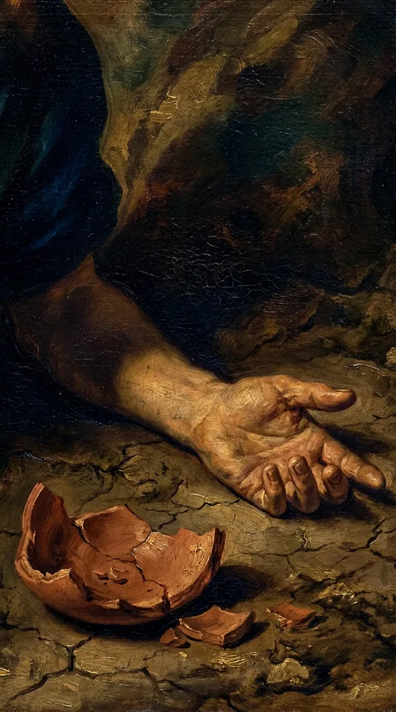
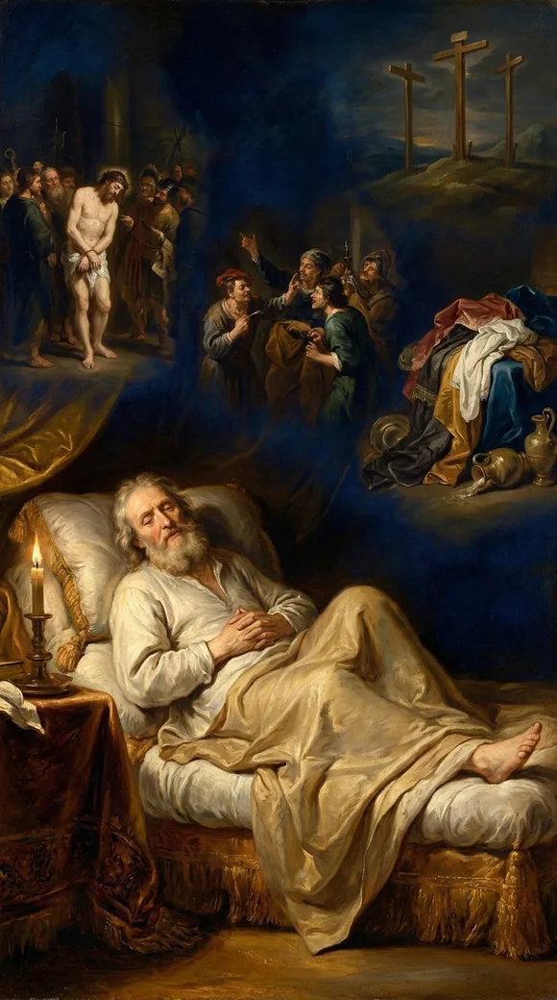
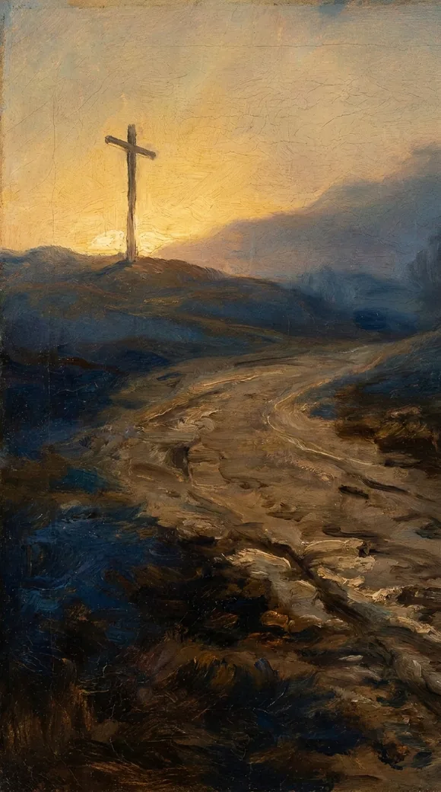

Video will be on YouTube when the series launches.
My tongue cleaveth to my jaws. The psalm's thirst, fulfilled in Jesus' cry from the cross.
The study behind this
Psalm 22 is a cry of King David, set down roughly a thousand years before Christ. It opens in the voice of a man surrounded and abandoned, then bends, line by line, toward a suffering David himself never endured and a rescue that reaches the ends of the earth.
My strength is dried up like a potsherd; and my tongue cleaveth to my jaws; and thou hast brought me into the dust of death.
Psalm 22:15
I thirst.
John 19:28
The reading
The One who made every ocean gasped two words on a cross: I thirst.
Psalm twenty-two. David wrote it in the first person, but he was picturing someone else's death. Watch the body give out:

My strength is dried up like a potsherd; and my tongue cleaveth to my jaws; and thou hast brought me into the dust of death.
Psalm 22:15
Dried clay; a tongue stuck fast; a man sinking into the dust of death. Then John records the dying Jesus' cry:
I thirst.
John 19:28

Psalm twenty-two doesn't foretell that cry, it paints the thirst behind it, a thousand years before He felt it.

And think who is thirsting: the One who made every river and spring, who offers the world living water, hanging there with nothing, in your place.

He went dry so that you could drink and never thirst again. The God who made every ocean cried out in thirst, so He could hand you the one water that never fails. And that water is Himself.
Every quotation is the King James Version, verified word for word against the text.